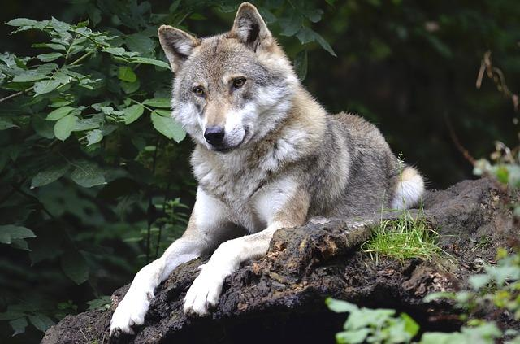
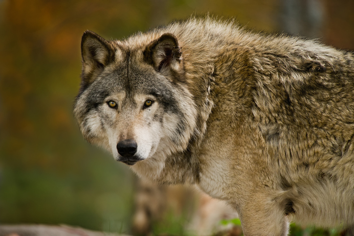
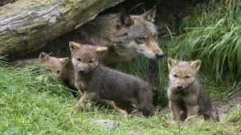

Habitat y Habitos alimenticions
Los lobos grises habitan en una variedad de hábitats, incluyendo bosques, tundras, estepas y montañas. Se distribuyen principalmente por América del Norte, Europa y Asia.
Su dieta consiste principalmente en mamíferos grandes como alces, bisontes y ciervos. Los lobos son cazadores oportunistas y pueden adaptarse a diferentes presas según la disponibilidad.
Históricamente, los lobos grises se encontraban en una amplia variedad de hábitats en América del Norte, Europa, Asia y partes de África. Sin embargo, debido a la caza, la pérdida de hábitat y otros factores, su rango se ha reducido significativamente.
Estado de Conservación
El lobo gris (Canis lupus) está clasificado como una especie de preocupación menor por la UICN, pero algunas subespecies están en peligro, como el lobo rojo (Canis rufus) y el lobo mexicano (Canis lupus baileyi) Aunque han sido históricamente perseguidos y exterminados en muchas áreas debido a la percepción de amenaza para el ganado y la seguridad humana, en las últimas décadas ha habido esfuerzos significativos para conservar y proteger a los lobos grises. Han sido objeto de reintroducciones en áreas donde fueron exterminados, y se han implementado medidas de manejo para mitigar conflictos con humanos y ganado.
Reproduccion
Los lobos grises se reproducen en febrero y marzo, y después de un período de gestación de aproximadamente 63 días, la madre da a luz de cuatro a siete cachorros. Una manada establecerá su territorio, que va hasta varios cientos de millas cuadradas.
Comportamiento
Los lobos grises son animales sociales que viven en manadas jerárquicas. Estas manadas están lideradas por una pareja alfa, que son los lobos dominantes. Tienen una comunicación muy desarrollada a través de aullidos, ladridos, gestos y posturas corporales.
Aspecto físico
Los lobos grises son animales robustos, con pelaje grueso y generalmente grisáceo, aunque pueden variar en color desde el blanco hasta el negro. Tienen orejas puntiagudas, hocicos alargados y colas largas y peludas.
Importancia ecológica
Los lobos grises juegan un papel crucial en los ecosistemas donde habitan, regulando las poblaciones de presas y ayudando a mantener el equilibrio natural. Su presencia puede tener efectos positivos en la biodiversidad y la salud de los ecosistemas.
| Categoría | Información |
|---|---|
| Hábitat y Ubicación Geográfica | El lobo gris habita en una variedad de hábitats, incluyendo bosques, praderas y tundras. Se encuentra principalmente en América del Norte, Europa y Asia. |
| Hábitos Alimenticios | Los lobos grises son carnívoros y se alimentan principalmente de mamíferos como ciervos, alces y bisontes. También pueden consumir aves, peces e insectos. |
| Hábitos Reproductivos | Los lobos grises suelen formar manadas familiares lideradas por una pareja dominante. La reproducción generalmente ocurre una vez al año, con una camada que consta de 4 a 6 cachorros en promedio. |
| Estado de Conservación | El lobo gris enfrenta diferentes niveles de amenaza dependiendo de su ubicación geográfica. En algunas áreas, está protegido y su población está aumentando, mientras que en otras está en peligro debido a la pérdida de hábitat y la caza. |
| tamaño y peso | Alrededor de 5 pies de largo, los lobos grises mexicanos por lo general pesan entre 50 y 80 libras |